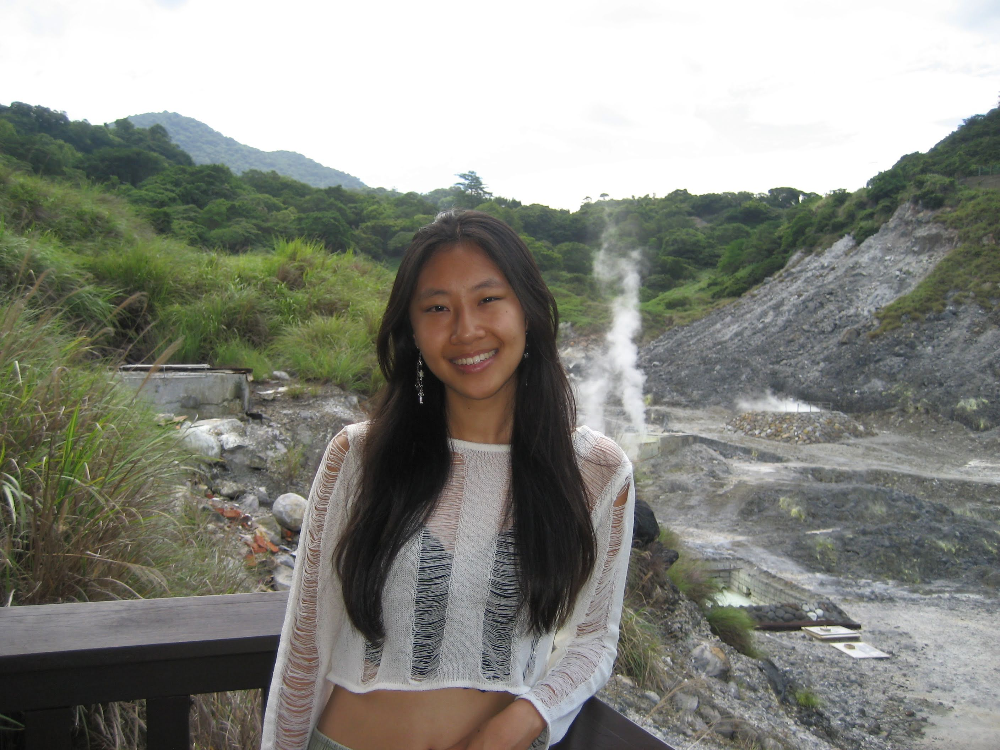

About Vivian's Sewing
Hi! My name is Vivian Shiang and I am the creator, designer, and seamstress of Vivian's Sewing (shocker)! I am a Freshman at Purdue University studying Game Development. One of my biggest hobbies is sewing! My grandma taught me how to sew when I was in elementary school. Although I do not remember any sewing skills from that time, it was the first time sewing and remains as a fond memory for me. I ACTUALLY started sewing during Junior to Senior year of summer. All of a sudden, I had the strong urge to learn how to sew as there were so many clothes lying around the house but no one was using them! Maybe I could turn them into something new that would breath new life into these pieces of clothing.So that summer, I spent all of my time turning two pairs of jeans into an over the shoulder bag (anniversary gift for my boyfriend).
I discovered how fun sewing was- it was like a puzzle, having to fit each piece of fabric with each other in a perfect way where no seams were showing, yet achieving the desired shape. On top of that, I love making anything with my hands and sewing covered this itch. I got to run my hands through the fabric and my feet on the foot pedal. The tactical feeling of sewing drove me to love sewing even further and since then, I have never really stopped sewing. I'm trying new techniques, new fabrics, and new projects to push myself to learn and deepen my understanding of sewing more and more. My favorite thing to sew are pants because the pattern for pants are pretty simple and easy to make modifications to. I just think there are so many different ways to change pants whether it is silhouette, design, and fabrics. On a similar wave length, my absolute favorite fabric to work with is denim. It is such a strong fabric that can really resist anything. I love how versatile it is and how the needle sounds when puncturing layers of denim.

Oops, I was rambling for a little bit, but if anyone wants to commision anything from me I am open to commisions :)
If anyone is wants to start learning how to sew themselves, I recommend this video!